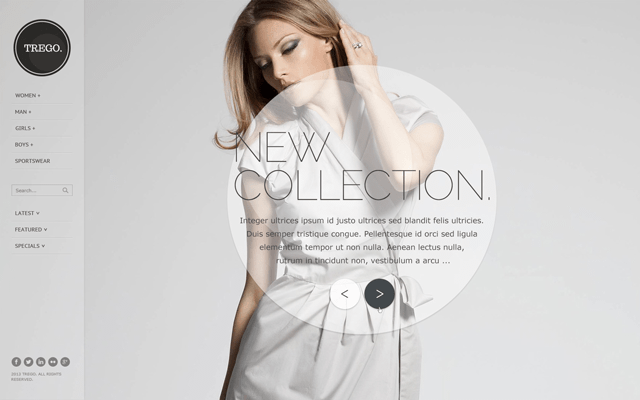
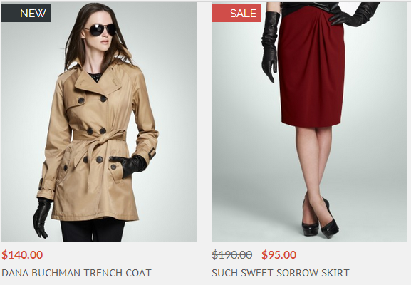

Trego Documentation
Thank you so much for purchasing
Trego - Nice Magento Theme!
This document covers the installation and use of this theme and reveals answers to common problems and issues - I encourage you to read this document thoroughly if you are experiencing any difficulties.
If you get any problems with Trego, please follow us on themeforest comment form or email us through Themeforest profile page.
Get started!
Getting started
To install this theme you must have a working version of Magento already installed. For information in regard to installing the Magento platform, please see the Magento installation guide - http://www.magentocommerce.com/knowledge-base/entry/magento-installationguide
- Extract the theme package(downloaded file from themeforest) on your computer and navigate inside "Theme Files" directory.
- Unzip "Trego_Theme.zip" file – it contains five directories: app, js, skin, media, lib
- Using your FTP client upload 5 directories to your Magento's root directory (Magento's root directory is where you can find Magento's basic files, such as: index.php and get.php).
Activation
Note:
- We recommend you to backup your original files and database data before activation.
Once you have uploaded the theme, activate your theme in Configuration > Design > Themes(Set the "Default" field as pasted theme directory name, its "trego" in our case.)
Important:
- After activation, please logout and login again to make all adjustments apply.
Install sample content
To install demo products and categories you can use the sample data from the official Magento site (it must be installed prior to the basic Magento installation):
http://www.magentocommerce.com/knowledge-base/entry/installing-sample-dataarchive-for-magento-1610
http://www.magentocommerce.com/download
Important:
- Import sample static blocks and cms pages - Please import the sample static blocks and cms pages in System / Configuration / TREGO 2.1.0 / Theme Settings / Theme Installation.(Please clear cache then logout and login again, when you get 404 error on this page.)
- Change Layout Column - Please set layout to 1 column in CMS > Pages as trego supports for 1 column.
- Change Logo Path - Please change the logo image path from default "logo.gif" to "logo.png" in System > Configuration > Design > Header.
- Install Sample Images/Static blocks - To get sample images and static blocks like homepage slider image, please follow the instruction in Theme Settings > Theme Installation.
How to update Trego version?
If you want to update Trego version on a pre installed site, please go through follow steps.
- Back up files for pre-configured data in this directory "/skin/frontend/default/trego/css/configed/".
- Copy/Paste all files from new version(extracted files from latest version) by replacing files from previous version.
- Paste the configuration files by backuped files in "/skin/frontend/default/trego/css/configed/".
Homepage Settings
Trego supports various types of slider and menu for homepage view. Go to System > Configuration > Trego Extensions > Homepage Slider & Menu section in Magento admin panel to configure the homepage.
Slider Settings
In this tab, you can set options related to configure slider.
Trego supports various types of slider and menu for homepage view. Go to System > Configuration > Trego Extensions > Homepage Slider & Menu section in Magento admin panel to configure the homepage.
- Enable Homepage Slider - If set to yes, enables background slider for homepage.
- Homepage Slider Type - Choose slider type for homepage.(6 types)
- CMS Block ID - Set CMS block ID for each sliders.
BxSlider1
BxSlider2
BxSlider3
Vertical Showcase Slider
Revolution Slider
Tile Gallery
How to edit content of homepage slider?
In order to edit content of homepage slider, please go to CMS > Static Blocks and edit contents of static blocks for each sliders .
Important:
In order to use homepage sliders, you may need to enable home page slider at "Enable Homepage Slider".
Menu Settings
In this tab, you can set options related to configure menu.
- Enable Menu - If set to yes, enables to configure Trego menus.
- Menu Type - Choose slider type for homepage.(4 types)
- Show Levels(Default Menu) - Select levels for default menu.
- Show Columns(Mega Menu) - Select column count for mega menu.
Default Menu
Mega Menu
Menu with Thumbnail Image
Theme Settings
This theme is equipped with the dedicated administrative module which offers a variety of additional settings. Go to System > Configuration > Trego > Theme Settings section in Magento admin panel to configure the basic settings of the theme.
Header
In this tab, you can set options related to the header section.
- Hide Empty Cart on Mobile Devices - If set to yes, hide mini cart on mobile devices.
- Enable Minimized Menu on Laptop Screen - If set to yes, will show minimized menu for 13", 14" laptop browsers.
Category View
In this tab, you can set options related to the category view. Category view presents the list of products from the selected category.
- Alternative Image - Show alternative image on mouse hover over the main image.
- Show right sidebar - If set to Yes, show right sidebar in category page, if No, it will show products in 3 columns mode.
- Hide Compare Button - If set to Yes, hide compare button on the toolbar.
- Keep Image Aspect Ratio - Keep/resize product images.
- Image Width - Resizing image width.
- Image Height - Resizing image height.

Category View(Grid Mode)
In this tab, you can set options related to the grid mode of the category view.
- Product Hover Links - If set to Yes, show jquery effect for the links such as 'Add To Cart', 'Add To Compare'. In this case the links will be displayed inside the product image.
- Product Hover Effect - Show border effect when hovers on a product, default is Disable.
- Show Ratings - Show rating with stars.
Category View(List Mode)
- Product Hover Effect - Show border effect when hovers on a product.
Product Label
In this tab, you can set options to show/hide product labels.
Important:
In order to display product labels, you may need to reindex the data and flush the cache after marking products as new and after setting a special price.
- Show "New" Label - If set to Yes, will show a "New" label on the main image of all new products. The label will be displayed in both product and catalog views.
- Show "Sale" Label - If set to Yes, will show a "Sale" label on the main image of all products with special price. The label will be displayed in both product and catalog views.
Note:
To promote any product as new, go to Catalog > Manage Products and select the product. In Set Product as New from Date and Set Product as New from Date fields, enter the date range in which the product will be promoted as a new product.
Note:
To set a special price go to Catalog > Manage Products, select the product and enter a special price in Special Price field. In Special Price From/To Date field you can enter a date range within which the special price will be active. This price will apply automatically when the From Date arrives and deactivate automatically when the To Date arrives. If you leave this range blank, the Special Price will apply until you remove it.

Product View
In this tab, you can set options for product view page.
- Related Products Checkbox - Enable checkbox for related products.
- Product image ratio - You can set the aspect ratio for producdt images.
Footer
In this tab, you can set options related to the footer section.
- Copyrights Text - You can set the copyrights text.
- Show Newsletter Subscribe Form - If set to Yes, will show newsletter subscribe form in the footer.
Customization Settings
In this tab, you can set options related customizing the theme.
- Load Custom CSS - If set to Enable, load "custom.css" file is located in skin/frontend/default/trego/css directory.
Theme Installation.
In this tab, you can set options related theme installation for static blocks and cms pages. Trego Supports "About US" page as a static block, to use this you should click "Import Static Blocks" and "Import CMS Pages" after theme installation.
Theme Design
This theme is equipped with administrative module which gives you the ability to configure the visual appearance of your store. You can change the colors of many elements by using color pickers or by specifying the color code manually. You can also apply textures (patterns) for the main sections of the page.
Go to System > Configuration > Trego > Theme Design section to configure the theme. Names of most of the options are pretty self-explanatory.
Note:
It is a good idea to disable Magento cache before you start to configure your store. Otherwise you will need to flush the cache in order to see any changes you have made in the config.
Colors
In this tab, you can set basic colors for the entire page, these colors will be inherited by all sections of the page.
- Basic Colors - You can set basic colors for the entire page. These colors will be inherited by all sections of the page.
- Buttons - You can set options related to fonts.
- Product Colors - You can set color options related to products.
- Other - Other color options.
Font
In this tab, you can set options related to fonts.
Page
In this tab, you can set options related to page background.
- Background Color - Background color of the entire page.
- Texture - Choose texture mode for background, preview is available.
Header
In this tab, you can set options related to header.
Important:
We used background image for left menu bar because of IE8, so to change background color or image of left menu bar, please update image in this path: /skin/frontend/default/trego/images/left-side-bg.png.
Footer
In this tab, you can set options related to footer.
Footer - Top
In this tab, you can set options related to top footer area.
Footer - Bottom
In this tab, you can set options related to bottom footer area.

Trego Extensions
This theme is equipped with several extensions for its configuration. You can change the settings for each extensions to confiure your own store.
Go to System > Configuration > Trego EXTENSIONS section to configure the theme.
Ajax Cart
In this tab, you can set options for ajax add to cart and ajax add to links.
Store Locations(Contacts Page)
In this tab, you can set options related to Contact Us page, see examples on our demo site http://trego.thesmartwave.net/default/contacts/
- General Settings - Set options related to google map.
- Contact Details - Set options related to contact details
404 Page Settings
In this tab, you can set options related to 404 error page, trego supports 2 types of 404 page.
- Enable Module - Enable to use 404 page.
- 404 Page Type - You can choose one of two 404 page types.
Twitter Feed
In this tab, you can set options related to twitter feed.
- Twitter Widget ID - Set twitter widget ID.
You can get necessary information about twitter widget from this link https://twitter.com/settings/widgets. - Tweets Counts - You can set number of tweet counts to show on the footer.
Homepage Slider & Menu
Described details of this extension in Homepage tab.
Social Icons
In this tab, you can configure variables of links for social network sites for the social icons on the footer.
Filter Products Configuration
You can set options related Filterproducts extension
- Bestsellers Configuration - Set options related to best sellers view on category page.
- Feature Product Configuration - Set options related to featured products view on homepage.
- Latest Product Configuration - Set options related to latest products view on homepage.
- Special Product Configuration - Set options related to special products view on homepage.
Blog
You can set options related blog extension. To manage blog content please go to Menu > Blog section.
You can use blog function of Trego easily as wordpress blog management.
Main Features
- Switchable categories' ID in blog post URL
- Switchable menu categories
- Switchable WYSIWYG
- Excerpt field
- Tags
- Tags cloud block
- Comment fields are pre-filled for logged in users
- Ability to show blog menu only on blog page
- Menu shortcut settings
- Ability to add post menu shortcut
- .htm rewrite added to post link
- Last posts widget
- Multistore RSS feed
- Ability to switch on/off blog for different stores
- Ability to duplicate posts
- Comments per page option
- Toolbar functionality for blog posts and comments
Price Slider
You can set options related price slider extension.
- Settings - Enable Price Slider extension.
- Price Slider Configuration - Set options related to price slider functions.
- AJAX Configuration - Set options related to ajax configuration on category page.
You should set Catalogue > Manage Categories > Display Settings > IsAnchor field to "Yes" to use this price filter.
This functions supports AJAX for the functions of toolbar including switch Grid and List mode, and sort products.
Trego Version Updates
Version 1.0
- Initial release.(09.12.2013)
- Version 1.1(09.16.2013)
- Minor CSS Fixes
- Add more navigation bar function in the right sidebar.
- Extend configuration function for Homepage Slider
- Version 1.2(09.16.2013)
- Minor CSS Fixes
- Fixed select currency issue in Firefox.
- Fixed Menubar issue in Firefox and IE.
- Version 1.3(09.24.2013)
- Fix a bug for Slider Type 2
- Version 1.4(09.26.2013)
- Minor css fixes
- Integrated Revolution Slider, added a new demo
- Version 1.4.1(09.30.2013)
- Fixed menu issues for laptop and iPad view
- Fixed tax price issue for mini-cart
- Version 1.4.2(10.7.2013)
- Fixed compile error on Magento 1.8.0
- Version 1.4.3(10.14.2013)
- Fixed importing static block issue
- Version 1.5.0(10.17.2013)
- Blog Extension is READY!!
- Version 1.6.0(11.8.2013)
- New Home/Slider version available
- Version 1.6.1(11.15.2013)
- Added Hiding compare button on category page feature
- Fixed add to cart issue for Grouped products
- Version 1.6.2(11.26.2013)
- Added Ajaxcart feature
- Added Custom menu feature
- Version 1.6.3(11.27.2013)
- Added theme setting for keep product image aspect ratio on category page.
- Version 1.6.4(12.03.2013)
- Fixed ajaxcart frontend issue.
- Version 2.0(12.14.2013)
- Magento 1.8.1 ready.
- Added product options on the mini-cart.
- Version 2.0.1(12.18.2013)
- Fixed ajax cart issue on SSL pages.
- Version 2.0.2(12.19.2013)
- Added Homepage Slider for Fullscreen video.
- Fixed login issue on Magento 1.8.1
- Fixed adding review issue on Magento 1.8.1
- Version 2.0.3(01.07.2014)
- Fixed configurable products issue on Product Page
- Version 2.0.4(01.08.2014)
- Fixed footer container position issue on product review page.
- Version 2.0.5(01.11.2014)
- Fixed the issue that add to cart with related products.
- Fixed bundle product style issues.
- Version 2.1.0(04.11.2014)
- Fixed the placeholder issue on IE.
- Fixed product image zoom issue on IE9.
- Fixed some style issues on IE.
- Fixed some javascript issues on IE.
- Version 2.2.0(05.15.2014)
- Magento 1.9.0 Ready.
- Fixed the placeholder issue on IE.
- Fixed Ajaxcart issue for SSL.
- Version 2.3.0(07.17.2014)
- Added Quickview.
- Added Onestepcheckout.
- Updated Homepage boxslider.
- Removed jQuery Selectbox
- Version 2.3.1(07.23.2014)
- Fixed Language, Currency Switcher issue on FF.
- Fixed Estimate Shipping state selectbox issue.